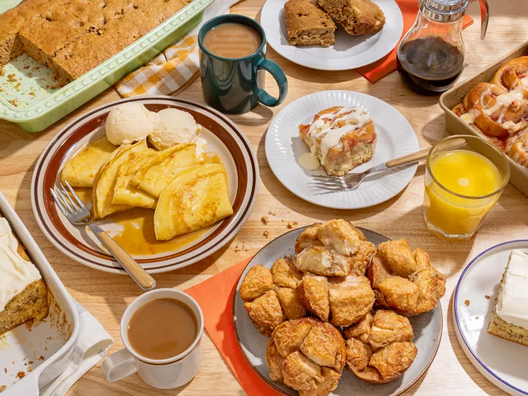
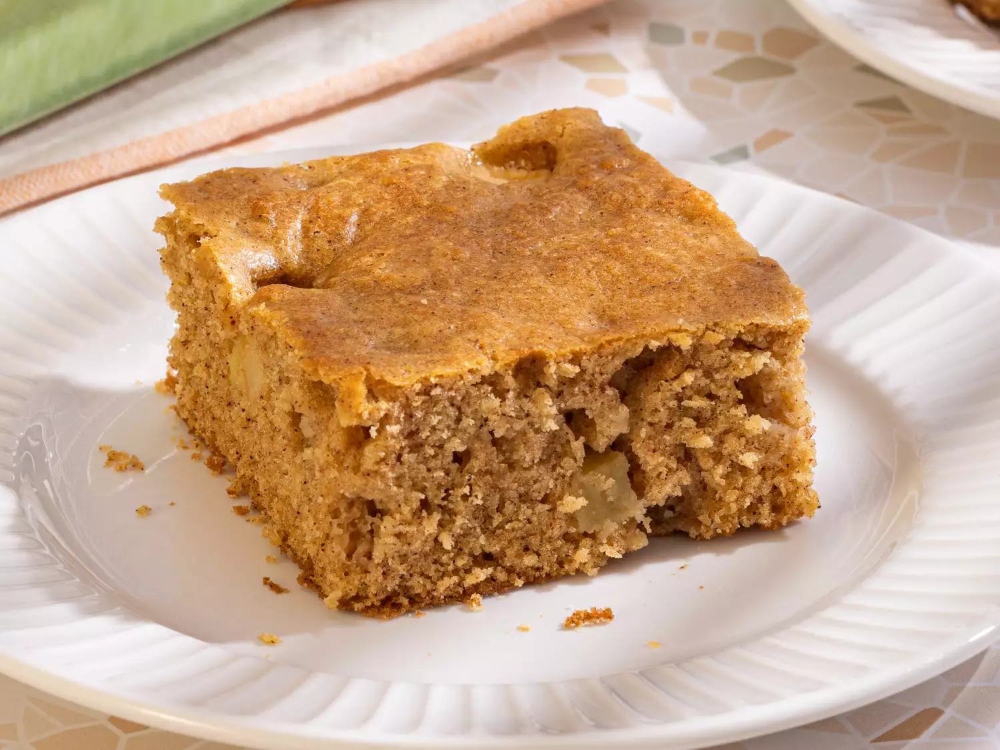
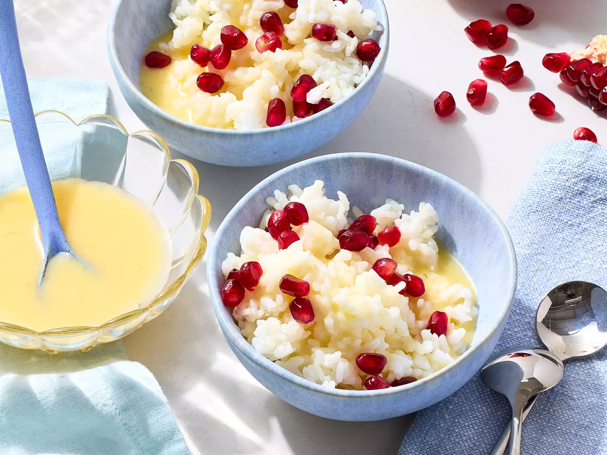

lasagna
Home Page

welcome to amandos foot shop, here we offer diffrent dishes and recipes
you are welcomed to try any of them and dont for get to rate it it after
eating it .
no one is stopping you man go ahed and choose your favorite as listed below
just make sure you dont over eat and gian weight .
just trying to reminde you on your health
All Recipes
Bananacake
Ingredients
How To make It:Steps
- put the suger in the pot
- add the cake to the pot
- pill the banana and add it to the mixter
- mix it up and put it inside the bread
- got ahead and enjoy your good.
AppleCake

Ingredients
How To make It:Steps
- put the suger in the pot
- add the cake to the pot
- pill the apple and add it to the mixter
- mix it up and put it fry it
- got ahead and enjoy your good.
RicewithFruitSauce

Ingredients
- Rice
- Grape Fruit
- Pee Nut
- Oil
- Salt
How To make It:Steps
- put the oil in the pot
- add the rice to the pot
- add the Pee nut to the mixter
- mix it up and put leave it for 7hous
- got ahead and enjoy your good.